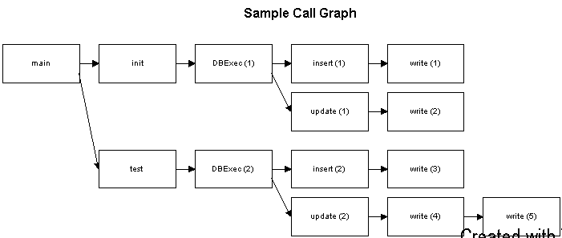
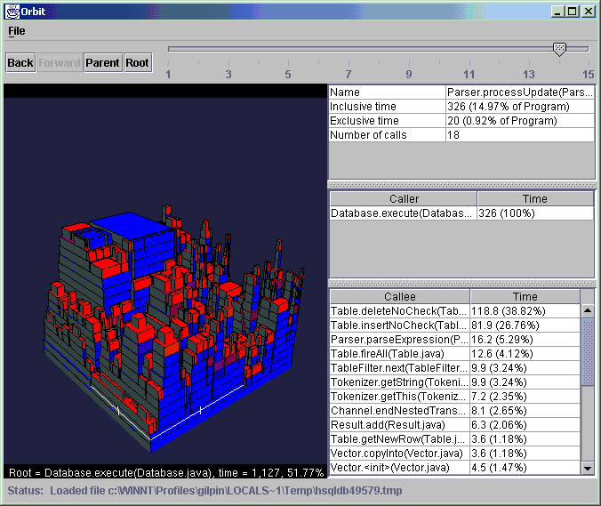

Orbit Concepts
Call Graphs
The operation of all computer programs can be represented as a call graph.
Consider a simple database test program which has the following methods:
main : the entry point of the programinit : initializes the database with some standard template
datatest : function which implements the testsDBExec : function which parses and executes a SQL statementinsert : inserts a table rowupdate : updates the data in a table rowwrite : writes the data to the data store (memory or hard disk)
Suppose that the call graph for this program looks like the following:

The numbers in parentheses are used to identify different invocations of the
same function. For instance, DBExec is invoked from init
and from test.
Each of these function invocations takes a certain amount of CPU time. This
CPU time is what profilers typically measure, one way or another. (See here
for an quick read on different profiling techniques).
Traditional Profile Visualization
Most profiler user interfaces look very similar. The primary display is a tree
view that looks a lot like the diagram above. Each function call is represented
as a node in the tree, and the amount of time spent in each function is typically
written next to the name of the function. The number of invocations of that
function may also be shown. There is also often a secondary display which shows
'hotspots'. A hot spot is a function in which the program spent a lot of time.
In our database example, write is probably a hotspot. The hotspot
display is typically a listing of the program hotspots, as best the profile
visualizer can determine them, with the callers of each hotspot drawn in a tree
that is essentially an inverted view of the call graph.
Problems With The 'Tree View' Approach
What's wrong with the tree view approach to profile visualization?
- Display density. A typical profile consists of hundreds or even thousands
of functions, each of which may be called from many different places in the
program, and each of which has its own associated CPU time and number of invocations.
Yet, in the tree view approach, most of the screen real estate is occupied
by text (the function names and times) and empty space. Only a small fraction
of the program can be seen at once, and the most interesting data (the CPU
times) are represented as text rather than as a diagram. The human eye and
brain are very good at assimilating large amounts of information presented
visually, if it is presented in a powerful way. The information density of
the 'tree view' GUI is very low.
- Inflexbility. The simple top-down call graph and bottom-up hotspot views
of the data are all that is available. Many performance problems do not normally
show up in these 2 views. Yet there is no mechanism for mining the data for
other, more subtle problems.
Profile Visualization Using Orbit
Orbit re-invents the visual display of profiler data using innovative and powerful
new views of profiler data. By focusing on the data, rather than text, Orbit
is able to present much more information to the user than a tree view display
does.
The Tower Diagram
The goal of the Orbit user interface is to present as much data about the program's
profile. The Tower Diagram, shown below in the context of the Orbit application,
replaces the tree view as the fundamental display paradigm.

The Tower Diagram has the following characteristics:
- Each block represents a function call in the context of its caller.
The area of the block is proportional to its inclusive
time.
- The block with the white highlight is the 'selected function'. Blocks with
yellow highlights are other invocations of the same function.
- The selected function is selected by single-clicking on it with the mouse
- The tables on the right hand side of Orbit show detailed information about
the selected function.
- All the callee functions of the selected function are rendered as blocks stacked on top of it. Since the area of each
block is proportional to its inclusive time, and the sum of the inclusive
times of all a functions callees cannot be greater than the inclusive time
of the function itself, the callee blocks always fit within the area of their
caller.
- The entire diagram can be rotated by clicking-and-dragging on the diagram.
- The slider bar at the top of Orbit shows the maximum call depth which is
displayed in the diagram. In the example above, functions up to 14 calls deep
are being displayed.
- The call depth can be expanded beyond 15 by clicking on the diagram and
using the + and - keys
- The text at the bottom shows information about the function which is at
the base of the diagram
- To re-draw the diagram with a different function as the base, double-click on that function's block in the diagram.
The buttons at the top of the application are all used to change the root of
the block diagram. Suppose that the
- Back
- Similar to a Back button in a web browser. Changes the root of tower diagram
back to its previous function
- Forward
- Similar to a Forward button in a web browser. Un-does the effect of using
the Back button.
- Parent
- Sets the root of the tower diagram to the caller
of the current diagram root
- Root
- Sets the root of the tower diagram to the root of the entire profile
Call Tables
To the right of the Tower Diagram are the Call Tables.
The top table shows detailed information about the selected function. Specifically:
- The name of the function and its Java class. Pause the mouse over the function
name text to see the fully-qualified name.
- The inclusive time of all occurrances
of the function in the current tower diagram.
- The exclusive time of all occurrances
of the function in the current tower diagram.
- The sum of the number of invocations of all occurrances of the function
in the current tower diagram
The caller table shows:
- The name of each caller of the selected function which is visible in the
current tower diagram. Pause the mouse over the function name text to see
the fully-qualified name.
- The percentage of inclusive time that was spent as a callee of the caller
The callee table shows:
- The name of each callee of the selected function which is visible in the
current tower diagram. Pause the mouse over the function name text to see
the fully-qualified name.
- For each callee, the percentage of the total inclusive time for all callees
that was spent in that callee.